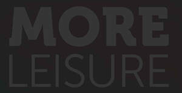
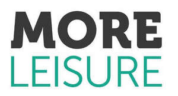

Trade Mark Journal No.2025/042 17 October 2025
UK00004273939 6 October 2025 (41,43,44)
Mark 1

Mark 2

- Class 41
- Leisure centre, health club, fitness centre and gymnasium services; fitness classes; provision of swimming facilities; provision of recreational facilities; provision and operation of recreation and sports facilities; provision of teaching facilities for sports and recreational activities; sports training and teaching academies; organisation of sporting competitions; provision of facilities relating to gymnastics, weight training, body building, aerobics, swimming and physical exercise; instructional services relating to gymnastics, weight training, body building, aerobics, physical exercise, physical rehabilitation, diet, nutrition, health and beauty; personal trainer services; provision of bespoke fitness programmes; provision of social club services; social club services for entertainment purposes; provision of golf courses and golf facilities; provision of teaching and training in relation to the game of golf; arranging and conducting golf tournaments and competitions; education and training; coaching, sports coaching; education services relating to physical fitness; arranging of demonstrations for training purposes; arranging of demonstrations for educational purposes; yoga instruction; producing and conducting exercises for music classes and programmes; teaching of beauty skills; providing online electronic publications; on-line library services, namely, providing electronic library services which feature newsletters, magazines, photographs and pictures via an on-line computer network; booking of exercise facilities; sport camp services; rental of sports equipment; rental of sports facilities; rental of tennis courts; rental of swimming pools; holiday camp services (entertainment); entertainment services; organising parties; advisory, consultancy and information services in relation to the aforesaid services.
- Class 43
- Provision of restaurant and catering facilities; provision of food and drink; cafe, bar and restaurant services; provision of eating and drinking facilities; bar, cafe, cafeteria, restaurant and self service restaurant services; cocktail lounge and coffee shop services; provision of banqueting services; preparation of take-away and fast food; take away food services; provision of facilities for meetings, conferences, conventions and exhibitions; room hire; catering services; rental of meeting rooms; rental of chairs, tables, table linen, glassware; Hotel accommodation services; information, advisory and consultancy services relating to the aforesaid services.
- Class 44
- Hygienic and beauty care services; cosmetic treatment services; spas; spa baths services; health spa services; medical spa services; sauna services; provision of sauna facilities, solarium facilities and steam room facilities; hydrotherapy; hairdressing services; hair cutting services; hair care services; hair colouring services; hair tinting services; hair braiding services; hair styling; shampooing of the hair; hair implantation; services for the care of the scalp; massage services; massage and therapeutic shiatsu massage; foot massage services; reflexology; foot care; human healthcare services; health care relating to relaxation therapy; beauty salon services; beauty treatment; beauty therapy treatments; beauty consultation; beauty counselling; human hygiene and beauty care; facial beauty treatment services; beauty treatment services especially for eyelashes; eyelash extension services; skin tanning service for humans for cosmetic purposes; tanning salons; solarium services; depilatory waxing; body waxing services for the human body; cosmetic electrolysis for the removal of hair; laser hair removal services; permanent hair removal and reduction services; skin care salons; medical services for treatment of the skin; nail care services; manicure services; removal of body cellulite; cosmetic body care services; therapeutic treatment of the body; cosmetic analysis; cosmetic treatment; cosmetic make-up services; make-up services; services of a make-up artist; application of cosmetic products to the body; application of cosmetic products to the face; cosmetic treatment for the hair; dietary and nutritional guidance; nutritional advisory services; advisory services relating to diet; counselling relating to diet; health counselling; therapy services; acupuncture; acupressure therapy; bodywork therapy; physical therapy; physical rehabilitation; chiropractic services; osteopathy; physiotherapy; psychotherapy; holistic psychotherapy; medical screening; fitness testing; therapeutical pilates; development of individual physical rehabilitation programmes; exercise facilities for health rehabilitation purposes (provision of-); anti-smoking therapy; colour analysis (beauticians' services); advisory, consultancy and information services in relation to the aforesaid services.
Serco Leisure Operating Limited
Representative: Lincoln IP